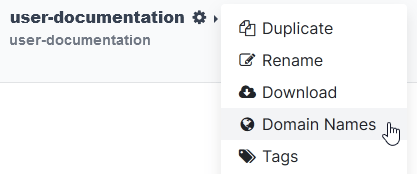
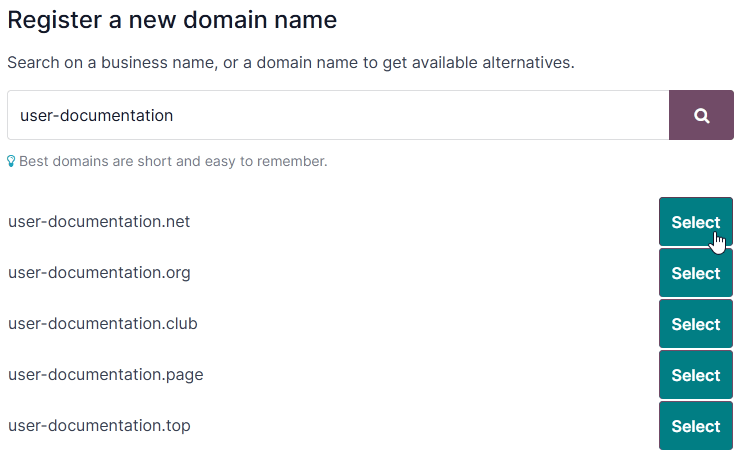

Domain names¶
Domain names are text-based addresses identifying online locations, such as websites. They provide a more memorable and recognizable way for people to navigate the internet than numerical IP addresses.
Odoo Online and Odoo.sh databases use a subdomain of the odoo.com domain by
default (e.g., mycompany.odoo.com).
However, you can use a custom domain name instead by registering a free domain name (only available for Odoo Online databases) or by configuring a domain name you already own.
Register a free domain name with Odoo¶
To register a one-year free domain name for your Odoo Online database, sign in to your account and go to the database manager. Click the gear icon (⚙️) next to the database name and select Domain Names.
Search for the desired domain name and check its availability.
Tip
Ensure the Website app is installed if the domain name registration option does not appear.
Select the desired domain name, fill in the Domain Owner form, and click Register. The chosen domain name is directly linked to the database.

Next, you should map your domain name to your Odoo website.
Important
A verification email from noreply@domainnameverification.net will be sent to the email address
provided in the Domain Owner form. It is essential to verify your email address to
keep the domain active and receive the renewal quote before expiration.
The domain name registration is free for the first year. After this period, Odoo will continue to manage the domain in partnership with Gandi.net, the domain name registrar, and you will be charged Gandi.net’s renewal rate. Odoo sends a renewal quotation every year to the email address mentioned in the Domain Owner form several weeks before the expiration date of the domain. The domain is renewed automatically when the quotation is confirmed.
Note
The offer is only available for Odoo Online databases.
The offer is limited to one domain name per client.
The offer is limited to the registration of a new domain name.
The offer is available to One App Free plans. Ensure that your website contains enough original content for Odoo to verify that your request is legitimate and respects Odoo’s Acceptable Use Policy. Given the high number of requests, it can take Odoo several days to review them.
DNS records¶
To manage your free domain name DNS records, open the database manager, click the gear icon (⚙️) next to the database name, select Domain Names, and click DNS.
A: the A record holds the IP address of the domain. It is automatically created and cannot be edited or deleted.
CNAME: CNAME records forward one domain or subdomain to another domain. One is automatically created to map the
www.subdomain to the database. If the database is renamed, the CNAME record must also be renamed.MX: MX records instruct servers on where to deliver emails.
TXT: TXT records can be used for different purposes (e.g., to verify domain name ownership).
Any modification to the DNS records can take up to 72 hours to propagate worldwide on all servers.
Note
Submit a support ticket if you need assistance to manage your domain name.
Mailbox¶
The one-year free domain name offer does not include a mailbox. There are two options to link your domain name with a mailbox.
Use a subdomain¶
You can create a subdomain (e.g., subdomain.yourdomain.com) to use as an alias domain for the
database. It allows users to create records in the database from emails received on their
email@subdomain.yourdomain.com alias.
To do so, open the database manager, click the gear icon
(⚙️) next to the database name, and go to . Next, enter the desired subdomain in the Name field (e.g.,
subdomain), the original database domain with a period at the end (e.g., mycompany.odoo.com.) in
the Content field, and click Add record.
Then, add the alias domain as your own domain by clicking Use my own domain, entering
the alias domain (e.g., subdomain.yourdomain.com), clicking Verify, and then
I confirm, it’s done.
Finally, go to your database and open the Settings. Enable Custom Email
Servers, enter the Alias Domain (e.g., subdomain.yourdomain.com) and click
Save.
Use an external email provider¶
To use an external email provider, you should configure an MX record. To do so, open the database manager, click the gear icon (⚙️) next to the database name, click . The values you should enter for the Name, Content, and Priority fields depend on the external email provider.
Configure an existing domain name¶
If you already have a domain name, you can use it for your Odoo website.
Warning
It is strongly recommended to follow in order these three steps to avoid any SSL certificate validation issues:
Add a CNAME record¶
Adding a CNAME record to forward your domain name to the address of your Odoo database is required.
The CNAME record’s target address should be your database’s address as defined at its creation
(e.g., mycompany.odoo.com).
The CNAME record’s target address should be the project’s main address, which can be found on Odoo.sh by going to , or a specific branch (production, staging or development) by going to , and clicking How to set up my domain?. A message indicates which address your CNAME record should target.
The specific instructions depend on your DNS hosting service.
See also
Important
Odoo only supports subdomains. To use your naked domain name (a domain name without any
subdomains or prefixes) (yourdomain.com), create a redirection 301 to redirect visitors to
www.yourdomain.com.
Example
You own the domain name yourdomain.com, and your Odoo Online database’s address is
mycompany.odoo.com. You want to access your Odoo database primarily with the domain
www.yourdomain.com and also with the naked domain yourdomain.com.
To do so, create a CNAME record for the www subdomain, with mycompany.odoo.com as the target.
Next, create a redirect (301 permanent or visible redirect) to redirect visitors from
yourdomain.com to wwww.yourdomain.com.
Map a domain name to an Odoo database¶
Warning
Ensure you have added a CNAME record to your domain name’s DNS before mapping your domain name to your Odoo database.
Failing to do so may prevent the validation of the SSL certificate and could result in a certificate name mismatch error. Web browsers often display this as a warning, such as “Your connection is not private”.
If you encounter this error after mapping the domain name to your database, wait up to five days, as the validation may still happen. If not, you can submit a support ticket, including screenshots of your CNAME records.
Open the database manager, click the gear icon
(⚙️) next to the database name, and go to . Then, enter the domain name (e.g., yourdomain.com), click Verify
and I confirm, it’s done.

On Odoo.sh, go to , type the domain name to add, then click Add domain.

See also
Odoo.sh branches: settings tab
SSL encryption (HTTPS protocol)¶
SSL encryption allows visitors to navigate a website through a secure connection, which appears as the https:// protocol at the beginning of a web address rather than the non-secure http:// protocol.
Odoo generates a separate SSL certificate for each domain mapped to a database using Let’s Encrypt’s certificate authority and ACME protocol.
Note
Certificate generation may take up to 24 hours.
Several attempts to validate your certificate are made for five days after you map your domain name to your database.
If you use another service, you can keep using it or change to Odoo’s.
Important
No SSL certificate is generated for naked domains (domain names without any subdomains or prefixes).
Web base URL of a database¶
Note
If the Website app is installed on your database, skip this section and continue from the Map a domain name to a website section.
The web base URL or root URL of a database affects your main website address and all the links sent to your customers (e.g., quotations, portal links, etc.).
To make your custom domain name the web base URL of your database, access your database using your custom domain name and log in as an administrator (a user part of the Settings access right group under Administration).
Important
If you access your database with the original Odoo address (e.g., mycompany.odoo.com), the web
base URL of your database will be updated accordingly. To prevent the automatic update of the
web base URL when an administrator logs in to the database, activate the developer mode, go to ,
and enter web.base.url.freeze as the Key and True as the Value.
Note
You can also set the web base URL manually. To do so, activate the developer mode, go to , and
search for the web.base.url key (create it if necessary) and enter the full address of your
website as the value (e.g., https://www.yourdomain.com). The URL must include the protocol
https:// (or http://) and not end with a slash (/).
Map a domain name to an Odoo website¶
Mapping your domain name to your website is different than mapping it to your database:
It defines your domain name as the main one for your website, helping search engines to index your website correctly.
It defines your domain name as the base URL for your database, including portal links sent by email to your customers.
If you have multiple websites, it maps your domain name to the appropriate website.
Go to . If you have multiple websites, select
the one you want to configure. In the Domain field, enter the address of your website
(e.g., https://www.yourdomain.com) and Save.
Warning
Mapping your domain name to your Odoo website prevents Google Search from indexing your original
database address (e.g., mycompany.odoo.com).
If both addresses are already indexed, it may take some time before the indexation of the second address is removed from Google Search. You can use the Google Search Console to fix the issue.
Note
If you have multiple websites and companies on your database, make sure to select the right Company under . Doing so indicates Odoo which URL to use as the base URL according to the company in use.